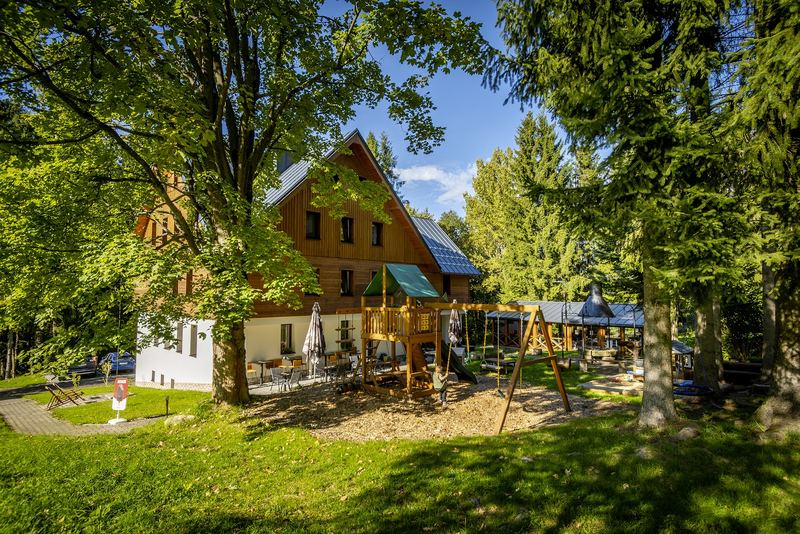

Okolí a kontakt

Kontakt
- Rezervace+420 776 147 769
- Obsluha v domě+420 776 237 818
Apartmány Vesna
Nová Ves nad Nisou 581
468 27 Nová Ves nad Nisou
GPS 50.72098N, 15.2205E
Autem v zimě
Parkujete zdarma na pozemku před domem. Když napadne víc sněhu, potřebujete na výjezd k domu řetězy. Cestu se snažíme odklízet.
Co je kolem
| Vlek Nová Ves nad Nisou | 5 min pěšky |
|---|---|
| Vlek Filip, Smržovka | 3 km, 5 min autem |
| Zásada Ski Centrum | 9 km, 12 min autem |
| Tanvaldský Špičák | 10 km, 15 min autem |
| Koupaliště Lučany nad Nisou | 5 km, 10 min autem |
|---|---|
| Přehrada Mšeno v Jablonci | 6 km, 15 min autem |
| Koupaliště Tanvald | 8 km, 15 min autem |
| Lom Jílové u Držkova | 15 km, 20 min autem |
| Rozhledna Černá Studnice, po červené značcev Černé Studnici je i mini ZOO | 1,6 km pěšky 2,5 km na kole |
|---|
Na výlet
Pramen Nisy, kozí farma Pěnčín, rozhledna Bramberk, vodopády Jedlová, protržená přehrada v Desné a bobová dráha Jizerky.